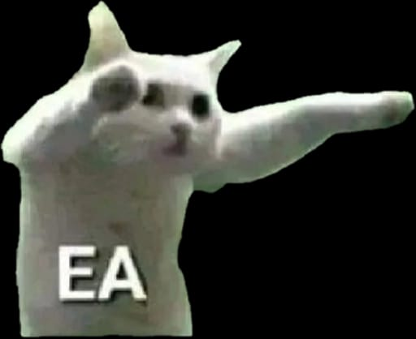

biasanya, hari valentine tuh identik sama seseorang yg ngasih surprise ke pasangannya. ada yg dapet bunga, coklat, bahkan longteks, tapi lu gadapet yahahaha🫵🏻😹
kaasiiaan, hari yg identik sama kasih sayang tapi ngga ada yg ngasih perhatian buat lu😞. ngga ada coklat, ngga ada bunga, bahkan sekedar "happy valentine’s day" aja ngga ada yg ngucapin? kasihaann
untung lu punya temen sebaik gw, jadi gausah sedih walaupun gada pacar, seengganya masih ada eang yg baik hati dan tidak sombong😎
gw doain aja deh buat lu, biar di tahun depan ada seseorang yg lebih spesial bisa ngucapin lu
so, i hope u find the love u deserve, yg pasti jangan beda agama🫵🏻
the love that choose to stay with u and struggle with u
the love that supporting each other
the love that makes u feel safe enough
the love that will never leave u behind
the love that holds u when the world feels too heavy
the love that will stand by u when u're right and correct u when u're wrong
the love that remains constant even when ur relationship is in the midst of uncertainties and struggles
u deserve love in ur own definition and meaning. u deserve what it can give, receive, endure and sacrifice. u are worthy of that one sure thing "LOVE"
may u be showered with love today and every day. and if no one has reminded u yet, let me be the one to say it, u are loved, u are worthy, and u deserve a love that feels like the warmest embrace on the coldest day
can we go back to the days where our love was ewes ewes bablas angine
maaf kalo kata katanya kurang manis, soalnya yg manis kamu

pencet tulisan yg di garis bwah
--